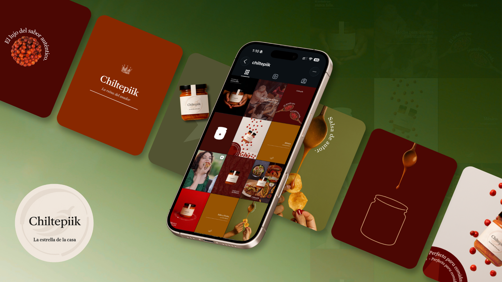
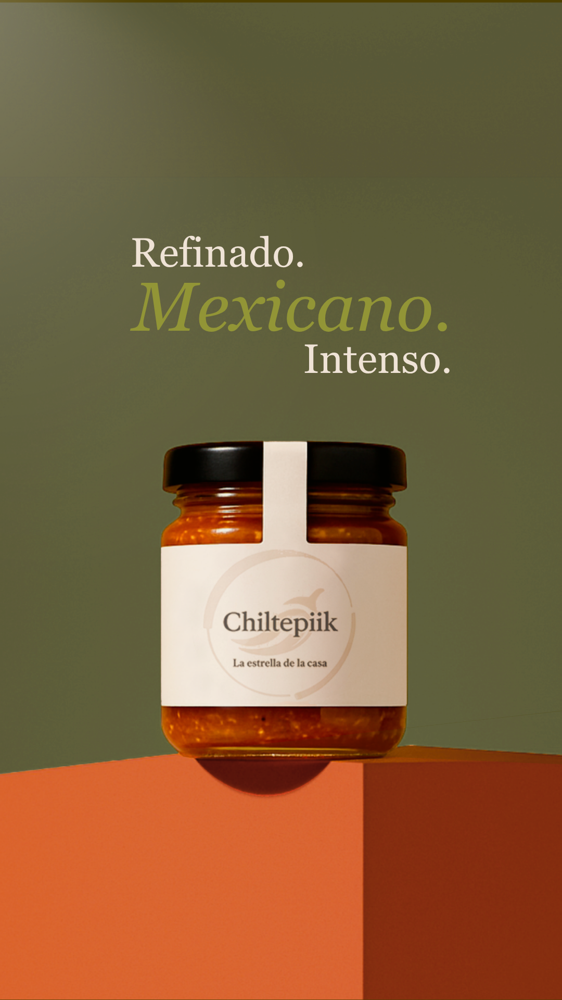
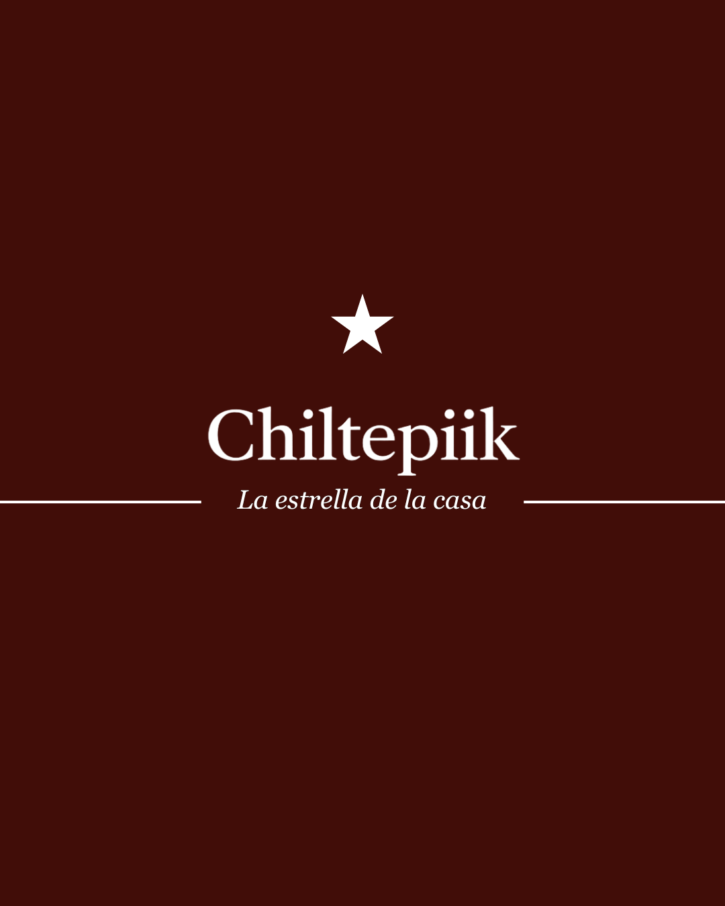
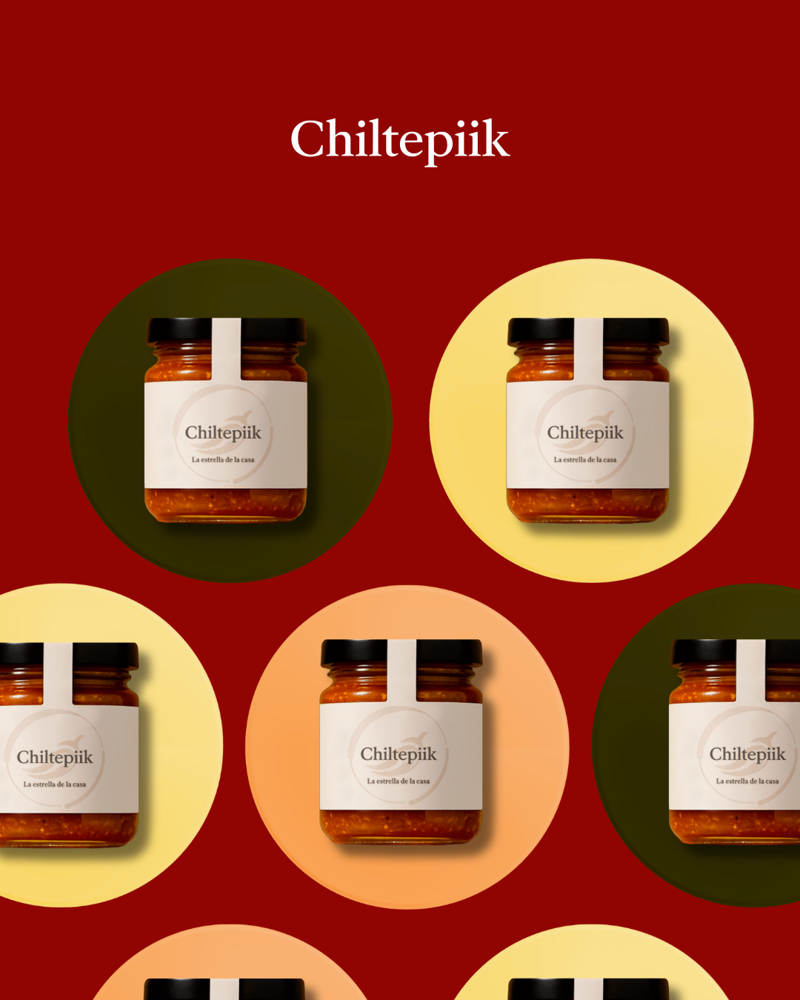
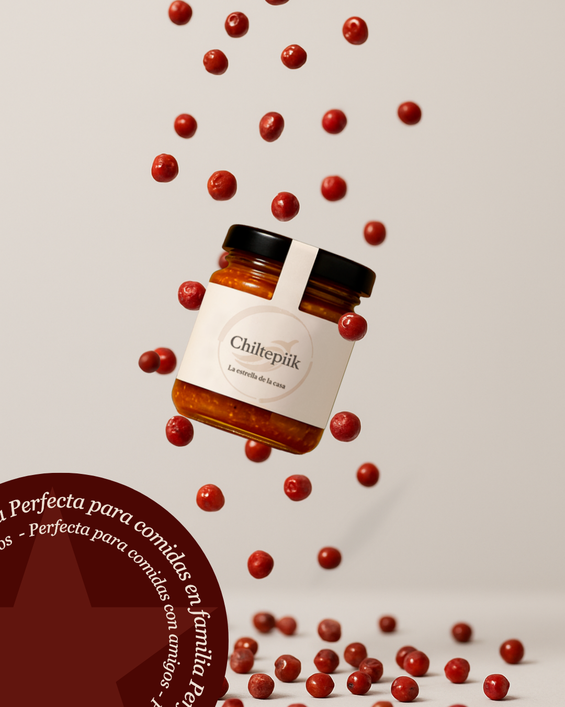

Alimentos Artesanales
Chiltepik
Contexto y reto
Chiltepik es una salsa artesanal elaborada con chiltepín e ingredientes naturales. La marca tenía logo, pero ningún sistema visual ni dirección de arte definida. El reto era construir desde cero una identidad editorial coherente que reflejara el carácter auténtico, artesanal y mexicano del producto.
Lo que desarrollé
Definí el universo visual completo de la marca: paleta de colores con tonos tierra, vino y verde olivo; estilo fotográfico; tipografías editoriales; y el sistema de composición de cada pieza. Desde esa base desarrollé la parrilla de contenido completa para redes sociales, incluyendo posts estáticos y reels.
Dirección de arte completa
Estilo visual desde cero
Parrilla de contenido
Sistema editorial completo
Posts para redes sociales
Instagram & Facebook
Reels
Diseño de piezas animadas
Piezas seleccionadas




